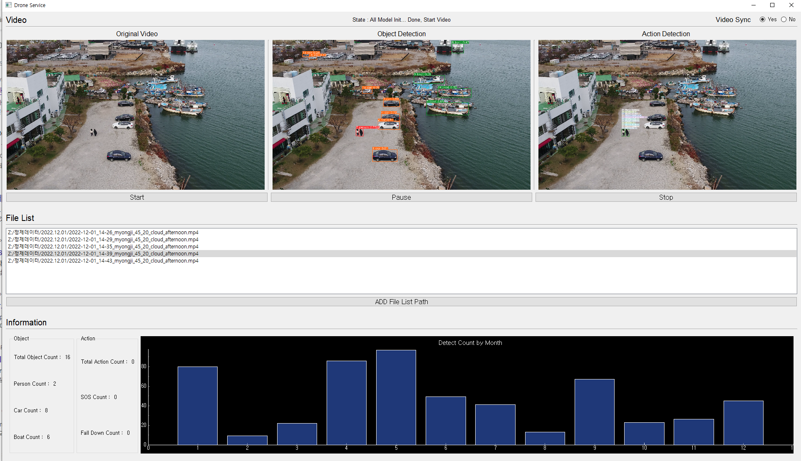
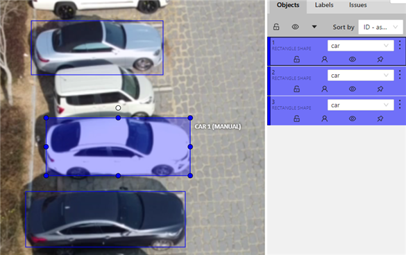
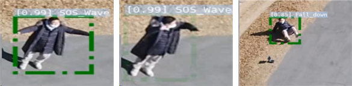

AI기반 해양 정찰 시스템 구축 실증 용역
과제요약
과제 기간 : 2022.10.24 ~ 2022.12.31
Github : https://github.com/zlstl1/thermalcamera
주요기술 : Python, Pytorch, PyQT, Labelme
주요기능 : 기존의 해안정찰의 경우 정찰선을 이용한 방법으로 인한 선박의 유지비용, 많은 인력투입 등으로 비용적 문제 발생하여 이를 드론을 통한 정찰을 수행하고 드론을 통해 촬영된 영상을 인공지능 기반의 영상 분석을 통해 관제사의 능률 향상 도모
수행업무
부산테크노파크 주관의 사업으로 실제 부산 소재의 명지, 이기대, 장산 인근에서 드론을 통한 촬영으로 영상 및 이미지를 획득하여 모델을 학습하고 영상 분석 프로그램 개발 해양 정찰을 위하여 사람, 자동차, 선박 3개의 객체와 SOS 수신호, 낙상 2가지의 액션을 라벨링을 통해 직접 데이터를 수집하고 가공하여 데이터셋 구축 구축된 데이터셋을 Yolo 기반의 실시간 처리가 가능한 모델 개발 및 학습 PyQT를 이용하여 모니터링 프로그램을 개발하며 NAS로부터 드론을 통해 촬영된 영상을 불러와 주기적인 배치작업을 통해 통계 정보를 표출하는 기능 제공 담당업무 : 라벨링 툴 커스터마이징 및 데이터 라벨링, 객체 탐지 모델 개발 및 학습, PyQT를 이용한 모니터링 프로그램 개발
ScreenShot



